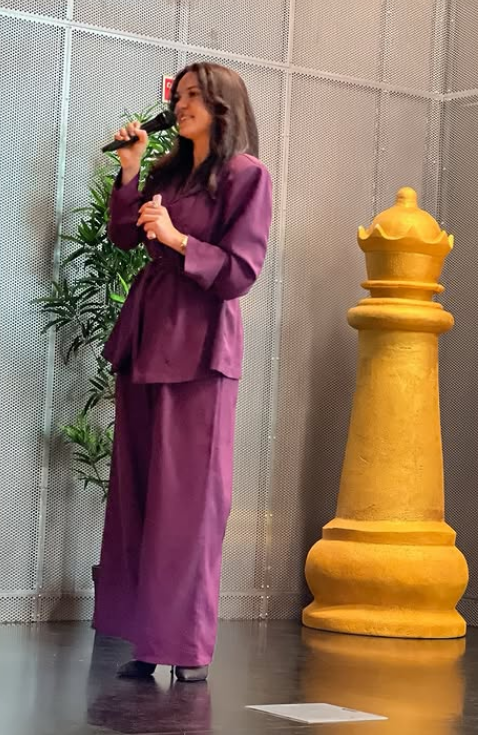
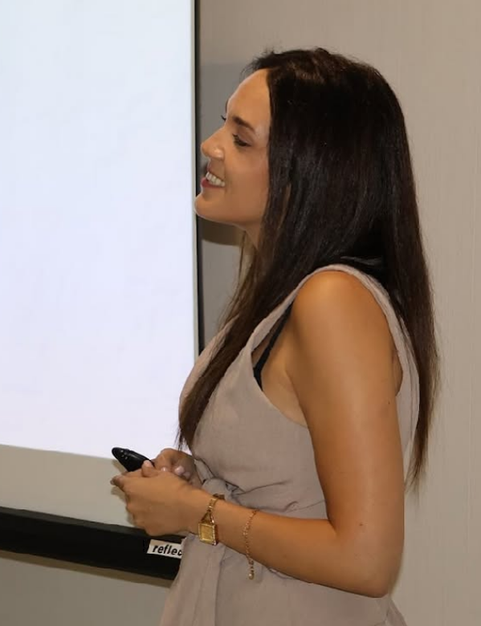

Comunica com clareza. Vende com mais naturalidade.
Ajudo mulheres empreendedoras e marcas pessoais a transformar presença digital em comunicação estratégica, conteúdo com intenção e vendas com autenticidade.

Se estás a publicar, mas não estás a vender, talvez o problema não seja a tua oferta.
Muitas empreendedoras publicam com frequência, mas continuam sem gerar conversas, confiança ou decisão. O problema muitas vezes está na falta de clareza da mensagem, no posicionamento pouco definido e numa comunicação que informa, mas não conduz à ação.
As pessoas não percebem rapidamente o que fazes
O teu conteúdo não mostra o valor da tua oferta
Publicas, mas recebes poucas mensagens
Sentes que vender parece forçado
Comunicação estratégica para transformar presença em decisão.
A Fedra ajuda-te a alinhar a tua mensagem, o teu conteúdo e a tua forma de vender para que a tua comunicação seja mais clara, humana e estratégica.
Clareza de mensagem
Para que o público perceba rapidamente quem és, o que fazes e porque deve confiar em ti.
Conteúdo com intenção
Para deixares de publicar por obrigação e começares a criar conteúdos que educam, conectam e aproximam da decisão.
Venda com naturalidade
Para comunicares o valor da tua oferta sem pressão, sem fórmulas rígidas e sem perder autenticidade.
Método UNNA
O Método UNNA é uma abordagem da Fedra Caseiro para mulheres empreendedoras que querem vender online com mais autenticidade, clareza e confiança, sem depender de fórmulas rígidas. Trabalha autoconhecimento, confiança, marca única e comunicação genuína com o público.
Nota: o significado de cada letra do método deve ser confirmado diretamente com a Fedra antes de ser apresentado publicamente.
Quero conhecer o Método UNNAEsta página é para ti se…
Sobre a Fedra Caseiro
Fedra Caseiro é especialista em comunicação estratégica, marketing digital, marca pessoal e vendas. O seu trabalho une clareza, posicionamento, conteúdo e autenticidade para ajudar mulheres empreendedoras e marcas pessoais a comunicarem melhor e venderem com mais confiança.
"A sua abordagem não se limita a criar conteúdo. O foco está em construir uma comunicação que mostra valor, gera confiança e conduz o público à decisão."Entrar em Contacto

Como funciona
Um caminho estruturado para alinhar a tua marca e a tua comunicação.
Diagnóstico
Percebemos onde a tua comunicação está confusa ou desalinhada.
Clareza
Organizamos a tua mensagem, público, oferta e posicionamento.
Conteúdo
Transformamos estratégia em conteúdos com intenção.
Conversão
Criamos uma comunicação mais natural para gerar conversas e vendas.
Pronta para comunicar com mais clareza?
Se sentes que o teu conteúdo precisa de mais direção, a primeira conversa pode ajudar-te a perceber o que está a bloquear a tua comunicação.
Falar com a Fedra no WhatsAppEsclarece as tuas dúvidas
Respostas às questões mais comuns sobre o acompanhamento e processo.